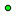
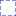

<!doctype html>
<html lang="en">
    <head>
        <meta charset="utf-8">
        <meta http-equiv="X-UA-Compatible" content="IE=edge">
        <meta name="viewport" content="initial-scale=1,user-scalable=no,maximum-scale=1,width=device-width">
        <meta name="mobile-web-app-capable" content="yes">
        <meta name="apple-mobile-web-app-capable" content="yes">
        <link rel="stylesheet" href="http://unpkg.com/leaflet@1.0.3/dist/leaflet.css">
        <link rel="stylesheet" href="css/qgis2web.css">
        <style>
        html, body, #map {
            width: 100%;
            height: 100%;
            padding: 0;
            margin: 0;
        }
        </style>
        <title></title>
    </head>
    <body>
        <div id="map">
        </div>
        <script src="js/qgis2web_expressions.js"></script>
        <script src="http://unpkg.com/leaflet@1.0.3/dist/leaflet.js"></script>
        <script src="js/leaflet.rotatedMarker.js"></script>
        <script src="js/leaflet.pattern.js"></script>
        <script src="js/leaflet-hash.js"></script>
        <script src="js/Autolinker.min.js"></script>
        <script src="js/rbush.min.js"></script>
        <script src="js/labelgun.min.js"></script>
        <script src="js/labels.js"></script>
        <script src="data/MBRs_0.js"></script>
        <script src="data/ExpandedMBRs_1.js"></script>
        <script src="data/Centers_2.js"></script>
        <script>
        var map = L.map('map', {
            zoomControl:true, maxZoom:28, minZoom:1
        }).fitBounds([[52.4415356538,13.3914772397],[52.5158600045,13.6000627246]]);
        var hash = new L.Hash(map);
        map.attributionControl.addAttribution('<a href="https://github.com/tomchadwin/qgis2web" target="_blank">qgis2web</a>');
        var bounds_group = new L.featureGroup([]);
        function setBounds() {
        }
        function pop_MBRs_0(feature, layer) {
            var popupContent = '<table>\
                    <tr>\
                        <th scope="row">field_1</th>\
                        <td>' + (feature.properties['field_1'] !== null ? Autolinker.link(String(feature.properties['field_1'])) : '') + '</td>\
                    </tr>\
                </table>';
            layer.bindPopup(popupContent, {maxHeight: 400});
        }

        function style_MBRs_0_0() {
            return {
                pane: 'pane_MBRs_0',
                opacity: 1,
                color: 'rgba(0,0,0,1.0)',
                dashArray: '',
                lineCap: 'butt',
                lineJoin: 'miter',
                weight: 2.0, 
                fillOpacity: 0,
            }
        }
        map.createPane('pane_MBRs_0');
        map.getPane('pane_MBRs_0').style.zIndex = 400;
        map.getPane('pane_MBRs_0').style['mix-blend-mode'] = 'normal';
        var layer_MBRs_0 = new L.geoJson(json_MBRs_0, {
            attribution: '<a href=""></a>',
            pane: 'pane_MBRs_0',
            onEachFeature: pop_MBRs_0,
            style: style_MBRs_0_0,
        });
        bounds_group.addLayer(layer_MBRs_0);
        map.addLayer(layer_MBRs_0);
        function pop_ExpandedMBRs_1(feature, layer) {
            var popupContent = '<table>\
                    <tr>\
                        <th scope="row">field_1</th>\
                        <td>' + (feature.properties['field_1'] !== null ? Autolinker.link(String(feature.properties['field_1'])) : '') + '</td>\
                    </tr>\
                </table>';
            layer.bindPopup(popupContent, {maxHeight: 400});
        }

        function style_ExpandedMBRs_1_0() {
            return {
                pane: 'pane_ExpandedMBRs_1',
                opacity: 1,
                color: 'rgba(0,0,255,1.0)',
                dashArray: '10,5',
                lineCap: 'butt',
                lineJoin: 'miter',
                weight: 1.0, 
                fillOpacity: 0,
            }
        }
        map.createPane('pane_ExpandedMBRs_1');
        map.getPane('pane_ExpandedMBRs_1').style.zIndex = 401;
        map.getPane('pane_ExpandedMBRs_1').style['mix-blend-mode'] = 'normal';
        var layer_ExpandedMBRs_1 = new L.geoJson(json_ExpandedMBRs_1, {
            attribution: '<a href=""></a>',
            pane: 'pane_ExpandedMBRs_1',
            onEachFeature: pop_ExpandedMBRs_1,
            style: style_ExpandedMBRs_1_0,
        });
        bounds_group.addLayer(layer_ExpandedMBRs_1);
        map.addLayer(layer_ExpandedMBRs_1);
        function pop_Centers_2(feature, layer) {
            var popupContent = '<table>\
                    <tr>\
                        <th scope="row">field_1</th>\
                        <td>' + (feature.properties['field_1'] !== null ? Autolinker.link(String(feature.properties['field_1'])) : '') + '</td>\
                    </tr>\
                    <tr>\
                        <td colspan="2">' + (feature.properties['field_2'] !== null ? Autolinker.link(String(feature.properties['field_2'])) : '') + '</td>\
                    </tr>\
                    <tr>\
                        <td colspan="2">' + (feature.properties['field_3'] !== null ? Autolinker.link(String(feature.properties['field_3'])) : '') + '</td>\
                    </tr>\
                    <tr>\
                        <td colspan="2"><strong>field_4</strong><br />' + (feature.properties['field_4'] !== null ? Autolinker.link(String(feature.properties['field_4'])) : '') + '</td>\
                    </tr>\
                    <tr>\
                        <td colspan="2">' + (feature.properties['field_5'] !== null ? Autolinker.link(String(feature.properties['field_5'])) : '') + '</td>\
                    </tr>\
                </table>';
            layer.bindPopup(popupContent, {maxHeight: 400});
        }

        function style_Centers_2_0() {
            return {
                pane: 'pane_Centers_2',
                radius: 3.0,
                opacity: 1,
                color: 'rgba(0,0,0,1.0)',
                dashArray: '',
                lineCap: 'butt',
                lineJoin: 'miter',
                weight: 1,
                fillOpacity: 1,
                fillColor: 'rgba(0,255,17,1.0)',
            }
        }
        map.createPane('pane_Centers_2');
        map.getPane('pane_Centers_2').style.zIndex = 402;
        map.getPane('pane_Centers_2').style['mix-blend-mode'] = 'normal';
        var layer_Centers_2 = new L.geoJson(json_Centers_2, {
            attribution: '<a href=""></a>',
            pane: 'pane_Centers_2',
            onEachFeature: pop_Centers_2,
            pointToLayer: function (feature, latlng) {
                var context = {
                    feature: feature,
                    variables: {}
                };
                return L.circleMarker(latlng, style_Centers_2_0(feature));
            },
        });
        bounds_group.addLayer(layer_Centers_2);
        map.addLayer(layer_Centers_2);
        var baseMaps = {};
        L.control.layers(baseMaps,{' Centers': layer_Centers_2,' Expanded MBRs': layer_ExpandedMBRs_1,' MBRs': layer_MBRs_0,},{collapsed:false}).addTo(map);
        setBounds();
        </script>
    </body>
</html>
